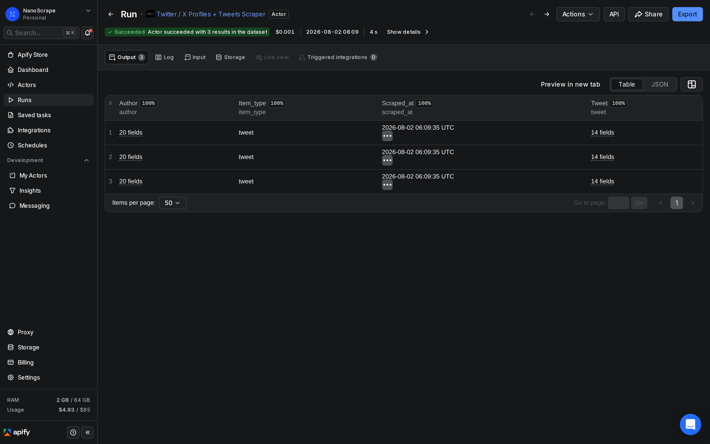
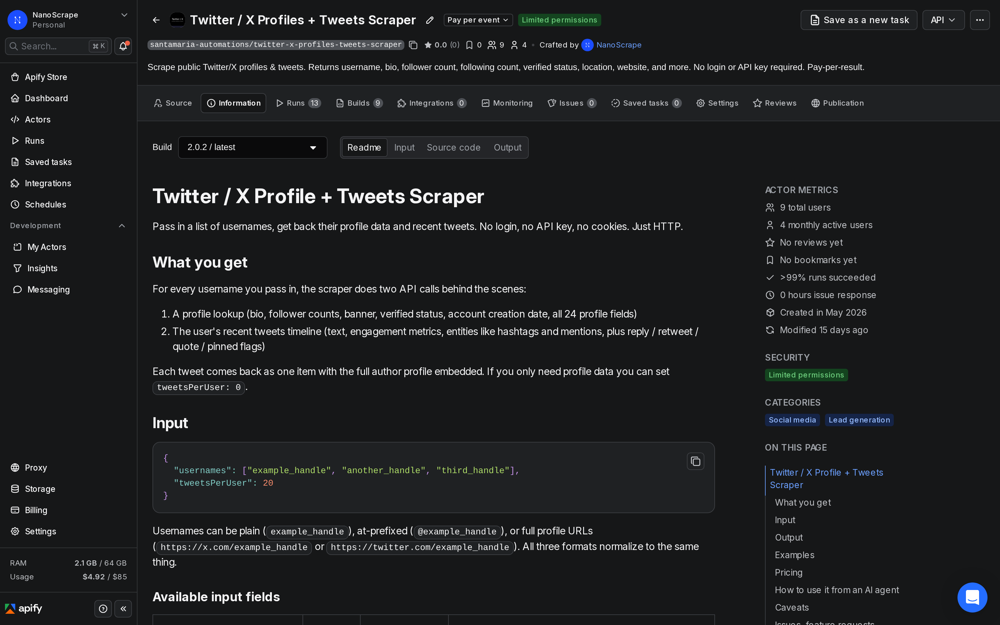
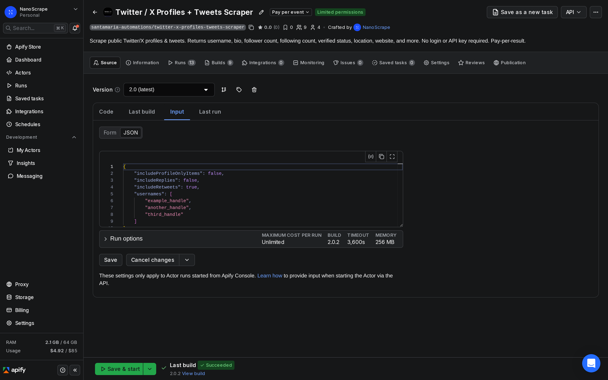
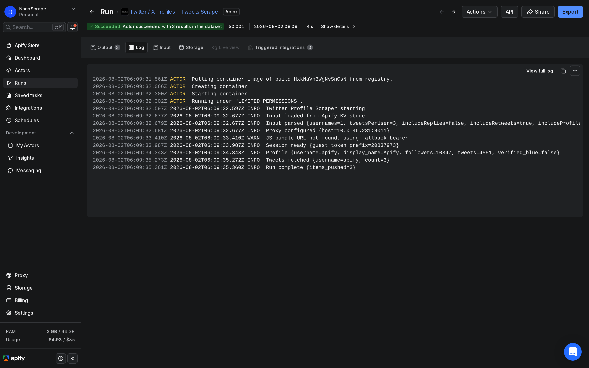

How to Collect and Analyze Tweets from Any Public Account
Grab tweet text, engagement counts (likes, retweets, views), author profile data, and hashtag entities from any public Twitter/X account. No developer account, no API key, no login. Each item comes back as structured JSON you can pipe straight into Excel, Python, R, or a database. About $0.31 per 1,000 tweets.

In this tutorial
What data you can analyze
Each tweet comes back as one JSON item with three top-level keys: item_type, tweet, and author. The tweet object holds everything you need for content and engagement analysis. The author object holds the account profile, so you get follower counts and bio data alongside every tweet without a second lookup.
Tweet fields
{
"item_type": "tweet",
"tweet": {
"id": "2071963996576743795",
"text": "We just 10x'd agent tool access to 20,000+",
"lang": "en",
"created_at": "2026-06-30T14:28:06Z",
"url": "https://x.com/apify/status/2071963996576743795",
"is_quote": false,
"is_retweet": false,
"is_reply": false,
"is_pinned": true,
"engagement": {
"reply_count": 117,
"retweet_count": 82,
"like_count": 554,
"quote_count": 98,
"bookmark_count": 269,
"view_count": 826768
},
"entities": {
"hashtags": [],
"mentions": [{ "username": "coinbase" }],
"urls": []
}
},
"author": {
"username": "apify",
"display_name": "Apify",
"followers_count": 10347,
"tweet_count": 4219,
"verified": false,
"blue_verified": false
},
"scraped_at": "2026-06-30T15:00:00Z"
}- engagement.like_count, retweet_count, view_count are the main signals for engagement analysis. View count is especially useful because it lets you calculate a real engagement rate (likes / views).
- entities.hashtags and entities.mentions are parsed arrays, so you can count hashtag frequency or build a mention graph without regex on the raw text.
- is_retweet, is_reply, is_pinned, is_quote are boolean flags. Filter to
is_retweet: falseandis_reply: falseto work with original content only. - lang is the language code Twitter inferred. Useful for multilingual account analysis.
- author is embedded in every row, so joining on a separate profile table is not necessary.
Prerequisites
- A free Apify account. Sign up at apify.com/sign-up. No credit card required. The free tier includes $5 of usage credit each month.
- The list of Twitter/X usernames or profile URLs you want to analyze. Plain handles (
openai), at-prefixed handles (@openai), and full profile URLs all work.
Step 1: Open the actor
- Go to apify.com/santamaria-automations/twitter-x-profiles-tweets-scraper and click Try for free.
- Sign in or create your free Apify account.
- The actor opens directly in Apify Console on the Input tab.

Step 2: Pick accounts and options
In the Input tab, switch to JSON editor and paste a configuration like this one. You can add as many usernames as you need in a single run.
{
"usernames": [
"openai",
"@AnthropicAI",
"https://x.com/Google"
],
"tweetsPerUser": 50,
"includeReplies": false,
"includeRetweets": false
}Input fields and what each one does:
usernames(required) - the accounts to scrape. Mix and match plain handles, @handles, and full profile URLs freely.tweetsPerUser- how many recent tweets to fetch per account. Range 0 to 1,000. Set to0if you only need the profile data and no tweets.includeReplies- whether to include tweets that are replies to other people. Defaultfalse. Set totrueif you are studying conversation patterns.includeRetweets- whether to include retweets. Defaulttrue. Set tofalseto focus on original content only.
"includeReplies": false and "includeRetweets": false. That gives you only original tweets, which is the cleanest signal for both topics.
Step 3: Run and collect
Click Start at the top right. The actor boots, authenticates against X without needing your credentials, fetches each user's profile and tweets, and streams results into the dataset as it goes. A run over three accounts with 50 tweets each typically finishes in under a minute.

When the run finishes, the status changes to Succeeded. Click the Results tab to see the collected items in table view. The item count in the header tells you exactly how many tweets were returned.
Step 4: Export your dataset
From the Results tab, click Export and choose your format:
- CSV - opens directly in Excel or Google Sheets. Each column maps to one field. Nested objects like
engagementare flattened automatically. - JSON - ideal for Python (pandas, NLTK, spaCy) or R. The full nested structure is preserved.
- XLSX - if you prefer native Excel format with proper column types.
- JSONL - one object per line, useful for streaming into a database or LLM pipeline.
https://api.apify.com/v2/datasets/{datasetId}/items?format=json&token={apiToken}. This is useful for automated pipelines that need fresh data each day.Analysis workflows
Engagement benchmarking across accounts
Load the CSV into a spreadsheet. Add a computed column: like_count / view_count * 100 for a like rate per impression. Group by author.username and compare. Because the actor embeds the author in every row, you can pivot directly without a join.
Hashtag frequency and trending topics
The tweet.entities.hashtags field is a pre-parsed array of strings. In Python, flatten across all tweets and use collections.Counter to get a frequency table in three lines:
import json
from collections import Counter
tweets = json.load(open("tweets.json"))
tags = [tag for item in tweets for tag in item["tweet"]["entities"]["hashtags"]]
print(Counter(tags).most_common(20))Sentiment scoring with an LLM
Pass the tweet.text field to any LLM API (or a local model) and ask it to classify sentiment as positive, neutral, or negative. Because you have created_at, you can then plot sentiment over time to catch how a brand's tone changed around a product launch or news event.
Influencer reach comparison
The author.followers_count and engagement.view_count fields let you compare actual reach against follower count. Accounts with a high view-to-follower ratio have strong algorithmic amplification, which is a better signal than raw follower count for influencer selection.
Automate recurring collection with n8n
To track accounts on a schedule (daily or weekly), use n8n to trigger runs and pipe the results into a Google Sheet or database automatically. Sign up at n8n, then build a workflow with:
- Schedule Trigger - set it to run daily at a fixed time.
- HTTP Request node - POST to
https://api.apify.com/v2/acts/santamaria-automations~twitter-x-profiles-tweets-scraper/run-sync-get-dataset-items?token=YOUR_TOKENwith your JSON input as the body. The endpoint runs the actor and returns items in one call. - Google Sheets node (or any database node) - append the returned rows to your tracking sheet.
{
"usernames": ["openai", "@AnthropicAI", "Google"],
"tweetsPerUser": 20,
"includeReplies": false,
"includeRetweets": false
}Because each run timestamp-stamps the scraped_at field on every item, you can store all runs in the same sheet and filter by date for trend charts.
What it costs
- Actor start: $0.01 per run. This covers session bootstrap and the first account lookup regardless of how many tweets you collect.
- Per tweet (or profile-only record): $0.0003 each.
- Free tier: Apify gives every account $5 of usage credit each month, which covers about 16,600 tweets before you pay anything.
Quick cost estimates:
- 3 accounts, 20 tweets each (60 items): $0.01 + $0.018 = $0.028
- 10 accounts, 50 tweets each (500 items): $0.01 + $0.15 = $0.16
- 50 accounts, 100 tweets each (5,000 items): $0.01 + $1.50 = $1.51
- 1,000 tweets: roughly $0.31 all in
FAQ
Do I need a Twitter/X API key or developer account?
No. The actor calls X's public endpoints without requiring your credentials, API keys, or a Twitter developer app. You only need an Apify account.
Can I collect tweets from multiple accounts in one run?
Yes. Add as many usernames as you need to the usernames array. All accounts are processed in the same run, and results go into a single dataset.
What does tweetsPerUser: 0 do?
It collects only the author profile (bio, follower counts, verified status, etc.) with no tweets. Useful if you need to build a profile dataset for influencer research without paying for tweet items.
Can I filter tweets by date or keyword?
The actor does not filter by date or keyword at collection time. Download the full dataset and filter locally. Because created_at is an ISO 8601 timestamp on every item, date filtering in a spreadsheet or with pandas is straightforward.
What happens with protected or suspended accounts?
Protected accounts return only the profile object with no tweets (their timeline is private). Suspended accounts return no data. The actor continues to the next username without failing the whole run.
How fresh is the data?
The actor fetches data live from X at the time you run it. There is no caching. The scraped_at field on each item records the exact UTC timestamp.
Can I use this for sentiment analysis?
Yes. The tweet.text field contains the raw tweet text, which you can pass to any sentiment library or LLM. The lang field tells you which language X detected, which is useful for routing multilingual datasets to the right model.
Related resources
- Twitter / X Profiles + Tweets Scraper actor page: Full specs, pricing tiers, and comparison with alternatives.
- How to Scrape Twitter/X Profiles and Tweets: The companion tutorial covering actor setup, input options, and output structure in depth.
- How to Scrape Reddit Posts and Comments: Collect subreddit posts, comments, and engagement data for social media comparison analysis.
- YouTube Scraper tutorial: Collect video metadata and comment data from YouTube channels for cross-platform content analysis.